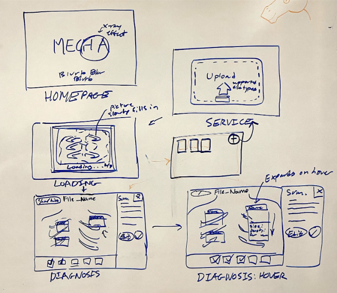
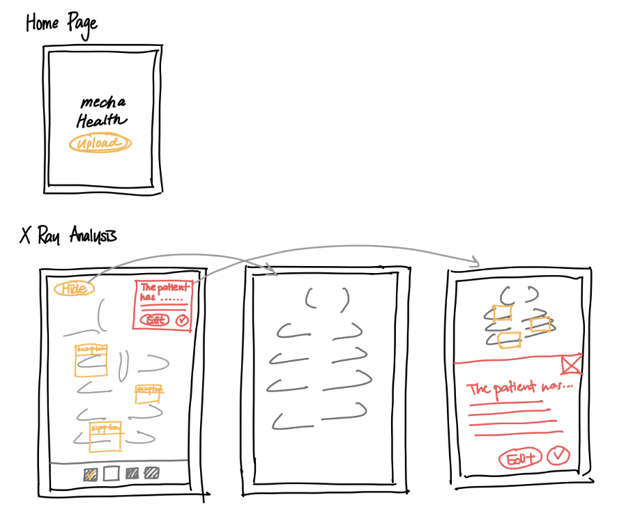
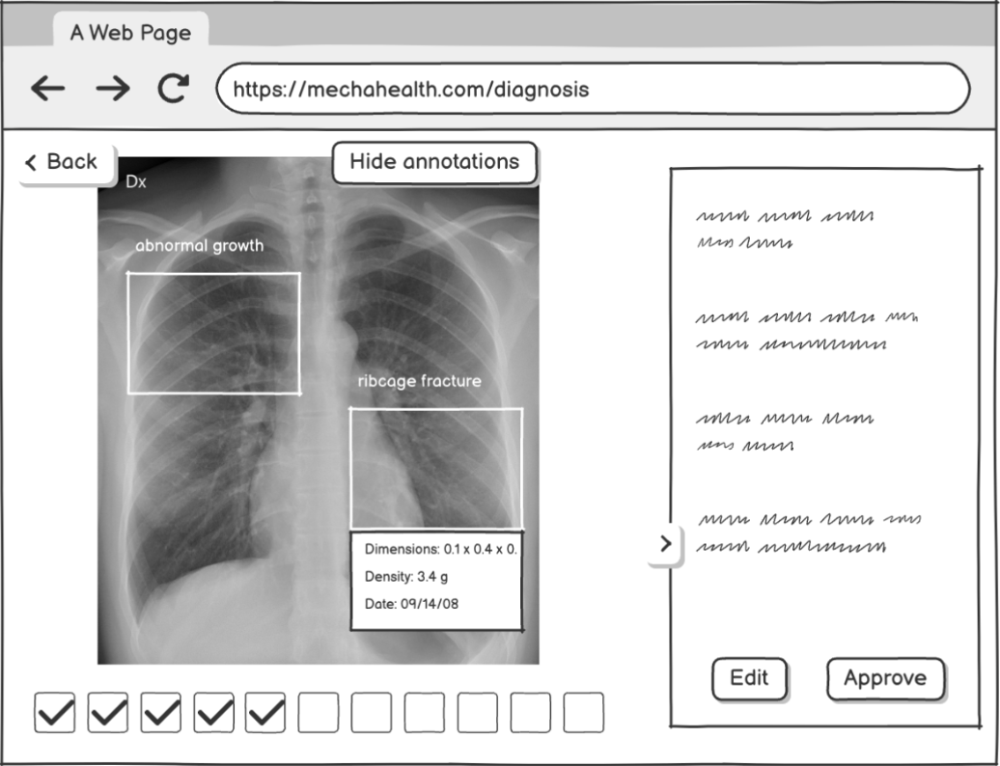
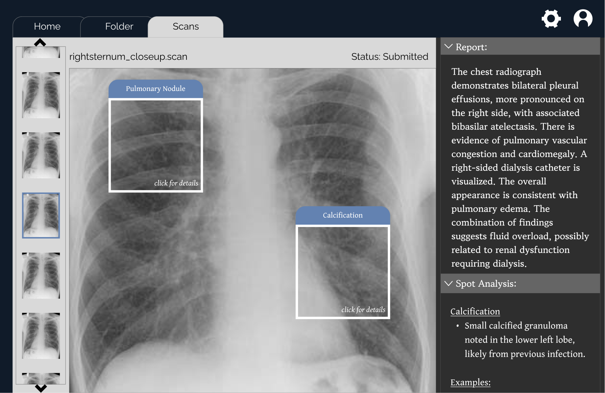
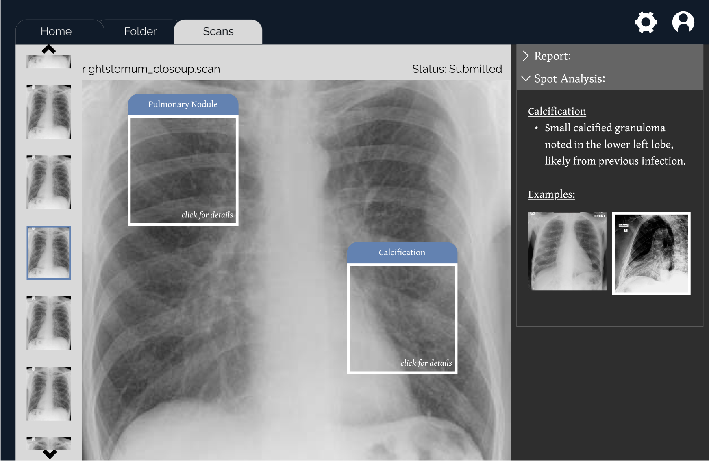

Enhancing clarity and trust in an AI-powered radiology tool through iterative, research-driven design.
Team
Jiwon Yoo, Dylan Lee, William Park, Thais Santos
Timeline
February 2025
Skills
This project was part of CSCI 1300: Interactive Design, a course that challenged us to go through the full lifecycle of product development—from ideation to user testing—by working directly with a real-world startup. Our team partnered with Mecha Health, a company building AI-powered radiology tools to accelerate diagnostic workflows. Our mission: design a multi-screen interactive prototype from scratch that could help reduce radiology review time from one hour to just five minutes.
In fast-paced clinical environments, every interface must amplify—not obstruct—care delivery. While patients never interact with this tool, its design has a direct impact on diagnosis speed and ultimately, treatment outcomes. We approached this challenge with a strong appreciation for the high-stakes context and the cognitive load radiologists face.
This project emphasized key areas I now consider foundational to product thinking: the importance of rapid ideation, iterative refinement through critique, collaborative team workflows, and user-centered validation. Communicating with Mecha Health throughout helped ensure that our final product wasn’t just visually polished—but practically relevant, strategically scoped, and backed by user research at every stage.
We grounded our work using the HEART Framework (Happiness, Engagement, Adoption, Retention, Task success) to identify what mattered most. Based on initial feedback and stakeholder interviews, we prioritized:
With that, our product goal became clear: make AI insights accessible and trustworthy within a frictionless, clinical-grade interface.
We kicked off with lo-fi sketches across platforms (desktop/tablet) to test layout hypotheses. Drawing on Jobs-To-Be-Done theory, we asked: "What jobs are radiologists hiring this tool to do?" The answer shaped our layout around the X-ray viewport as the visual center, flanked by AI analysis, navigation, and upload utilities.


Design principles guiding these sketches included:
We developed mid-fidelity wireframes and gathered feedback in two cycles of critique. Notable updates post-feedback:

Our final Figma prototype used a professional, muted color palette (navy, gray, white) with subtle chrome details, preserving both usability and a sense of trustworthiness. We structured our design with Nielsen’s Heuristics in mind—especially visibility of system status and recognition over recall.


Loom run through: Loom Video
The redesigned interface offered:
We ran qualitative testing with 5 users simulating radiologist workflows. Our scenario: "You’ve just received 3 scans. Identify the issue in each, and approve or flag accordingly." Key insights:
This showed a need for better onboarding nudges or adjusted default states to spotlight Mecha’s core value prop: AI-driven insight. In future iterations, I’d introduce a first-time-user flow and usage funnel tracking to monitor drop-offs and optimize UX entry points.
This section was developed independently from our main project as part of my personal curiosity around startups, product thinking, and how early-stage ideas translate into meaningful impact. While our team collaborated on the Mecha Health prototype, I took time after the project to reflect on the broader strategic value of our work—how design decisions map to real-world workflows, organizational goals, and product viability. This exercise helped me think beyond usability alone and consider how thoughtful design contributes to long-term success and scalable solutions.
For Mecha Health, I mapped the radiologist workflow end-to-end and identified key friction points affecting throughput. Our goal wasn’t just usability—it was to reduce bottlenecks, minimize misreads, and improve scan turnaround time. A 5x efficiency improvement meant not only faster diagnoses but also potential reductions in operational costs and improved resource allocation.
I consistently translated ambiguous goals into structured feature requirements. For example, when radiologists reported overwhelm from dense interfaces, I proposed feature-level changes (e.g., collapsible panels, color-coded icons) that reduced cognitive load—prioritizing clarity without sacrificing diagnostic control. These were validated through user testing and iteration cycles.
While we did not have access to production analytics, we simulated key metrics during testing: navigation path adherence, task completion time, and summary recall rates. In a live setting, I would track these KPIs post-launch to measure task success (HEART), optimize onboarding (activation rate), and track retention across diagnostic sessions.
Through continuous communication with Mecha Health’s product team, I ensured our prototype aligned with their technical constraints and roadmap. This experience helped me strengthen my ability to balance user goals with engineering feasibility—a critical BA responsibility.
Ultimately, I view my role not only as a designer or developer, but as a translator between business needs, user behavior, and technical solutions.
This project wasn’t just about UI—it was about building clinical trust through design. From stakeholder alignment to usability critiques, I gained hands-on practice balancing user needs, technical constraints, and business priorities. It deepened my understanding of design sprints, cross-functional collaboration, and how thoughtful UX can drive product adoption in mission-critical environments.
This experience solidified my belief that great design is product strategy. When teams build with empathy and rigor, the result is not just a better interface—but better care.